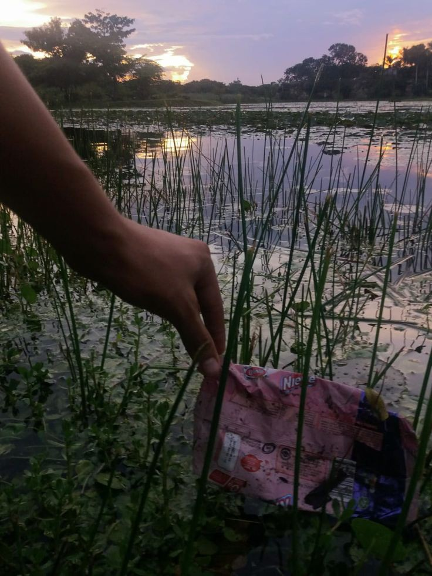

PROBLEMAS
1. *Cambio Climático*: El aumento de las emisiones de gases de efecto invernadero está causando un calentamiento global, lo que resulta en fenómenos extremos como huracanes más intensos, sequías severas y aumento del nivel del mar.
2. *Contaminación*: La contaminación del aire, agua y suelo afecta la salud humana y la biodiversidad. Los contaminantes industriales, el uso de plásticos y los desechos agrícolas son fuentes importantes de contaminación.
3. *Deforestación*: La tala indiscriminada de bosques para la agricultura, la ganadería y la urbanización reduce la biodiversidad, altera los ciclos del agua y contribuye al cambio climático.
4. *Pérdida de Biodiversidad*: La extinción de especies debido a la destrucción del hábitat, la caza excesiva y el cambio climático está disminuyendo la diversidad biológica, lo que puede afectar la estabilidad de los ecosistemas.
5. *Escasez de Agua*: La sobreexplotación de fuentes de agua dulce y la contaminación han llevado a una crisis de agua en muchas regiones, afectando tanto a las comunidades como a los ecosistemas.
6. *Desertificación*: La degradación del suelo debido a prácticas agrícolas insostenibles, deforestación y cambio climático está convirtiendo tierras fértiles en desiertos, lo que afecta la producción alimentaria.
7. *Acidificación de los Océanos*: El aumento del dióxido de carbono en la atmósfera se absorbe en los océanos, lo que reduce el pH del agua y afecta a organismos marinos como corales y moluscos.
8. *Residuos Sólidos*: La acumulación de desechos sólidos, especialmente plásticos, contamina el medio ambiente y afecta la vida marina. Muchos vertederos están llegando a su capacidad máxima.
9. *Contaminación por Plásticos*: Los plásticos desechados se acumulan en océanos y ecosistemas terrestres, afectando a la vida silvestre y entrando en la cadena alimentaria.
10. *Impacto en Comunidades Vulnerables*: Muchas comunidades enfrentan mayores riesgos ambientales debido a su ubicación geográfica o falta de recursos para adaptarse a los cambios ambientales.
Estos problemas requieren atención urgente y colaboración global para desarrollar soluciones sostenibles que protejan nuestro planeta para las generaciones futuras.

| ANT | SIG |